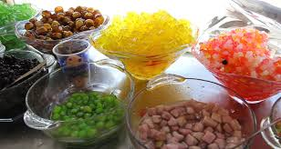
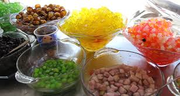
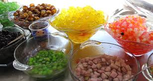

色々なタピオカを飲んで見ましょう！！！


 

タピオカティーの発祥には二つの説があります。1983年に台湾台中市の喫茶店春水堂 のオーナーである劉漢介が清涼飲料水に対抗できるような中国茶として誕生させたという説。 二つ目が台南市の喫茶店翰林茶館のオーナー宗和が由来であるという説であります。 日本では1990年代後半ごろから、快可立 やEasyWayなど台湾チェーン店が進出してきた 事によりタピオカティーの知名度が一気に高まった。また中華街の店頭で製造販売しているほか、 2000年ごろからコンビニエンスストアの棚にも並ぶようになりました。 丸大食品の子会社・安曇野食品工房が製造する珍珠茶別名・Q-PON〈キューポン〉、 現名称・タピオカミルクティーは2002年11月発売で、タピオカパールが食べやすいように太いストローが付いています。 学園祭で見ることもあります。2008年にもブームとなりました。2010年代の初めから世界のタピオカミルクティーの店が日本に進出していました。 2018年から2019年に渡って流行しており、これは第3次タピオカブームと言われています。 第3次ブームはタピオカがインスタ映えする事、台湾スイーツの人気、甘くないお茶と組み合わせた事 が一因とする分析もあります。タピオカドリンクは専門店、台湾スイーツの店以外の外食にも 広まり大手回転寿司にも登場した。第3次ブームでは紅茶以外に緑茶、烏龍茶、ほうじ茶等お茶 のバリエーションの広がり、フルーツジュース・スムージとお茶以外のドリンクの使用などが起こりました。 タピオカブームは飲み物以外にも波及しタピオカミルクティー味のグミやチョコレート菓子などが販売されました。
